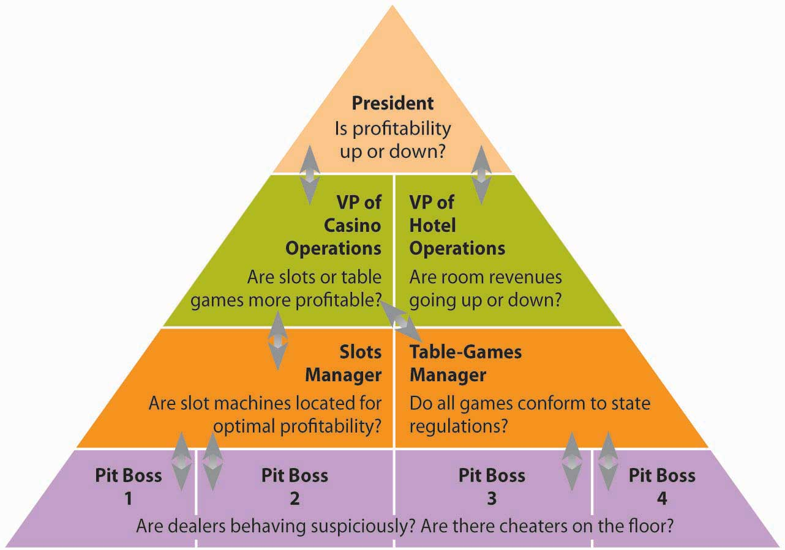
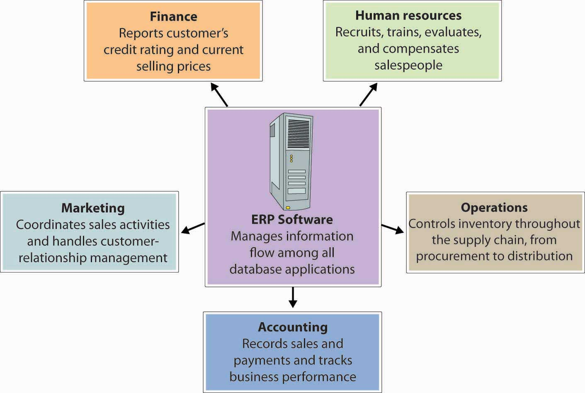
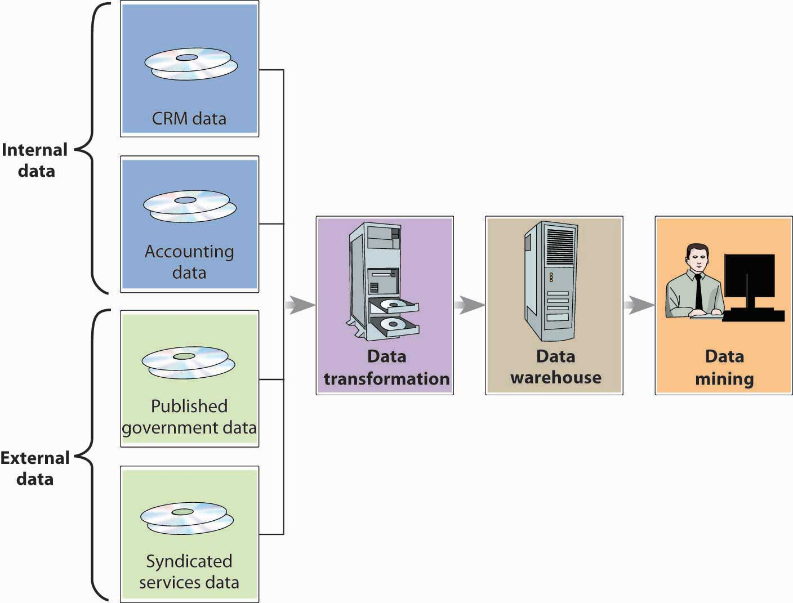
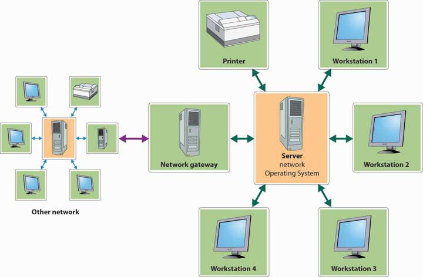
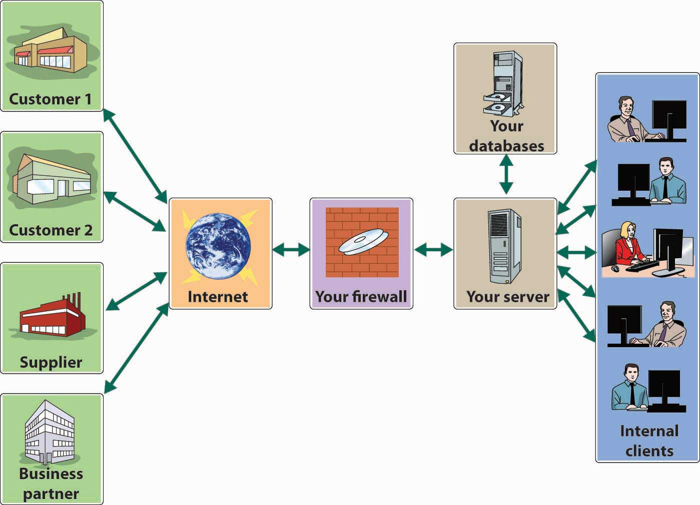
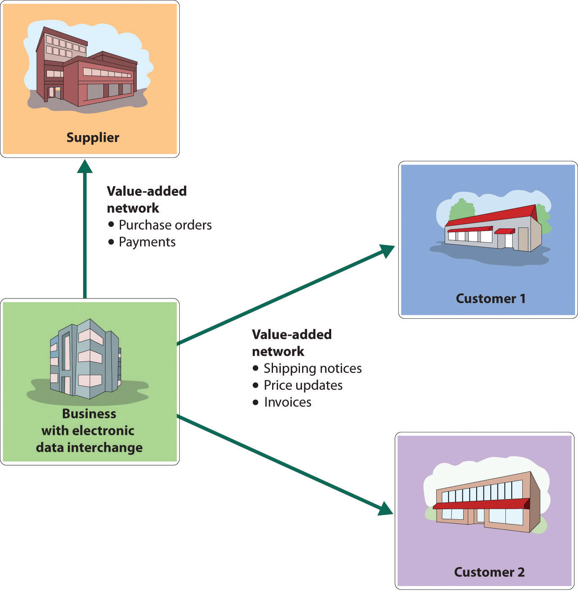

If you enjoy gambling and want to be pampered, the Las Vegas Strip is the place for you.In November 2010, Harrah’s Entertainment, Inc. changed its name to Caesars Entertainment Corporation. The Harrah’s name will still be one of the newly named company’s primary brands, in addition to Caesars and Horseshoe. The four-mile stretch is home to some of the world’s most lavish hotels and casinos, each competing for its share of the thirty-seven million visitors who pack the city each year.Kyle Hansen, “Las Vegas Records 2.7 Percent Increase in Visitors for 2010,” Las Vegas Sun, February 8, 2011, http://www.lasvegassun.com/news/2011/feb/08/las-vegas-records-27-percent-increase-visitors-201/ (accessed November 14, 2011). The Strip is a smorgasbord of attractions. At the luxurious Mirage, you can witness the eruption of a seventy-foot volcano every quarter hour. The five-star Bellagio resort boasts a $300 million art collection (including Picassos and Van Goghs). There are star-studded shows, upscale retailers, and posh restaurants with award-winning chefs. You can relax at pools and spas or try your luck in the casinos.
So how does a gaming and entertainment company compete in this environment? If you’ve ever been to Las Vegas, you know that a lot of them erect mammoth, neon-bathed, brick-and-mortar casino-resorts. A few, however, do what Caesars did in the late 1990s: they invest heavily in technology and compete through the effective use of information. What kind of information? Marketers at Caesars collect information about the casino’s customers and then use it to entice the same people to return. Does the strategy work? Caesars is the world’s largest casino entertainment company in the world.Caesars, “Company Information,” Caesars, http://www.caesars.com/corporate/ (accessed November 14, 2011).
Throughout this chapter, we’ll discuss the information needs of Caesars’s top executives, managers, and other employees. We’ll examine the ways in which the company uses technology to collect data and process them into information that can be used at every level of the organization.
By the time the company took the plunge and committed $100 million to marketing-related information technology (IT), Caesars had been collecting and storing data about customers for almost a decade. “While the company thought it important to collect customer information,” recalls a senior marketing executive, “the problem was we had millions of customers to collect information on, but we had no systematic way of turning it into a marketing decision. We didn’t know what to do with it.” In other words, Caesars was collecting a lot of data but not necessarily any information. So what’s the difference?
As an example, suppose that you want to know how you’re doing in a particular course. So far, you’ve taken two 20-question multiple-choice tests. On the first, you got questions 8, 11, and 14 wrong; on the second, you did worse, missing items 7, 15, 16, and 19. The items that you got wrong are merely dataUnprocessed facts.—unprocessed facts. What’s important is your total score. You scored 85 on the first exam and 80 on the second. These two numbers constitute informationData that have been processed or turned into some useful form.—data that have been processed, or turned into some useful form. Knowing the questions that you missed simply supplied you with some data for calculating your scores.
Now let’s fast-forward to the end of the semester. At this point, in addition to taking the two tests, you’ve written two papers and taken a final. You got a 90 and 95 on the papers and a 90 on the final. You now have more processed data, but you still want to organize them into more useful information. What you want to know is your average grade for the semester. To get the information you want, you need yet more data—namely, the weight assigned to each graded item. Fortunately, you’ve known from day one that each test counts 20 percent, each paper 10 percent, and the final exam 40 percent. A little math reveals an average grade of 87.
Though this is the information you’re interested in, it may be mere data to your instructor, who may want different information: an instructor who intends to scale grades, for example, will want to know the average grade for the entire class. You’re hoping that the class average is low enough to push your average of 87 up from a B+ to an A– (or maybe even an A—it doesn’t hurt to hope for the best). The moral of the story is that what constitutes information at one stage can easily become data at another: or, one person’s information can be another person’s data.
As a rule, you want information; data are good only for generating the information. So, how do you convert data into information that’s useful in helping you make decisions and solve problems? That’s the question we’ll explore in the next section.
To gather and process data into information and distribute it to people who need it, organizations develop an information system (IS)Computer system for gathering and processing data into information and distributing it to people who need it.—the combination of technologies, procedures, and people who collect and distribute the information needed to make decisions and coordinate and control company-wide activities. In most large organizations, the IS is operated by a senior management team that includes a chief information officer (CIO)Senior executive who oversees information and telecommunications systems. who oversees information and telecommunications systems. There may also be a chief technology officerHigh-level executive who reports to the CIO and oversees information technology planning and implementation. who reports to the CIO and oversees IT planning and implementation. As for information managersManager with responsibility for determining the information needs of members of the organization and meeting those needs., their tasks include the following:
The job is complicated by the fact that information needs vary according to different levels, operational units, and functional areas. Consider, for instance, the information needs of managers at several levels:
Figure 15.1 "Information Needs and Flows" illustrates a hypothetical hierarchy of information needs at Caesars. The president, for example, needs information to determine whether profitability is up or down or if the organization is facing any new competitive threats. At the vice-presidential level, executives need information that will help them in controlling and planning for specific areas of operations. The VP of casino operations, for example, might need to know which operations are most profitable—slots, table games, or other gaming activities. The VP of hotel operations might want to know whether room revenues are going up or down.
Figure 15.1 Information Needs and Flows
The information needs of middle-level and lower-level managers are different still. The slot-machine manager might want to know whether the placement of machines on the casino floor affects profitability. The poker manager might want to know whether all table games comply with state regulations. At a lower level, the pit manager (who’s in charge of table games in a particular area) needs to know whether there’s a card-counter at his blackjack table or whether a dealer’s activities are suspicious.
Even at a given level, information needs can vary. A manager on the hotel side of the business, for instance, doesn’t care much about profitability at the poker tables, while a pit manager doesn’t have much use for hotel housekeeping reports. The reports that an accountant needs would hardly be the same as those needed by a human resources manager.
Having stressed the differences in information needs, we should pause to remind ourselves that the managerial levels, operations, and functions of every organization are intertwined, to a greater or lesser degree. If you’ll glance again at Figure 15.1 "Information Needs and Flows", you’ll be reminded that organizations need to share information, that information must flow, and that it must flow in both directions, bottom-up and top-down. At Caesars, for instance, both casino and hotel managers are concerned about security, which is also of interest to managers in different functional areas. Information supplied by the security group is obviously vital to managers in the gaming areas, but HR managers also need it to screen potential employees. Marketing information is clearly important to both casino and hotel operations: to maximize overall profits, the company uses marketing data to fill hotel rooms with customers who spend big in the casinos.Jim Kilby, Jim Fox, and Anthony F. Lucas, Casino Operations and Management, 2nd ed. (Hoboken, NJ: John Wiley & Sons, 2005), 183–84.
Caesars’s information needs entail more than allowing individuals in a given casino to share information; information has to be shared among all of Caesars’s thirty-nine casinos. Thus, Caesars relies on an integrated IT system that allows real-time communication among all its properties. Installing the system (in the mid-1990s) was complicated, and not everyone in the organization liked the idea. Some managers felt that information sharing threatened their independence. Others, including some in the IT group, doubted that a large number of separate IT systems could be adequately integrated. To get everyone on board, John Bushy, then senior VP of information technology, pledged that he wouldn’t cut his hair until the system was up and running. By the time it was operational in 1997, Bushy had hair down to his shoulders, but it was worth it: Caesars’s ability to share real-time information across all its properties has been a major factor in the company’s success. Caesars’s new system cut costs by $20 million a year, increased brand recognition, and increased the number of customers playing at more than one Caesars property by 72 percent.Meridith LeVinson, “Jackpot! Harrah’s Big Payoff Came from Using IT to Manage Customer Information,” CIO Magazine, February 1, 2001, http://www.cio.com/archive/020101/harrah.html (accessed June 2, 2006); “Harrah’s Entertainment Inc.: Real-Time CRM in a Service Supply Chain,” Global Supply Chain Management Forum, Stanford Graduate School of Business, http://www.gsb.stanford.edu/scforum/login/pdfs/Harrah.pdf (accessed November 14, 2011).
Many large and mid-size companies rely on a highly integrated system called an enterprise resource planning (ERP) systemIntegrated computer system used to channel information to multiple users. to channel information to multiple users. To understand what an ERP system does, forget about the P for planning (it really doesn’t have much to do with planning) and the R for resource (it’s an imprecise term). Focus on the E for enterprise.Christopher Koch, “The ABCs of ERP,” CIO.com, http://wikifab.dimf.etsii.upm.es/wikifab/images/d/da/The_ABCs_of_ERP.pdf (accessed November 14, 2011). An ERP system integrates the computer needs of all activities across the enterprise into a single system that serves all users. Such broad integration isn’t a simple task, and you wouldn’t be the first person to wonder whether it wouldn’t be easier to give each department its own computer system. Salespeople, for example, need a system that tracks sales and generates sales reports. Meanwhile, manufacturing personnel don’t need to track sales but do need to track inventory. What’s the problem with stand-alone computer systems? Quite simply, users in various departments can’t share information or communicate with each other.
Imagine that you’re a sales manager for a fairly large manufacturing company that produces and sells treadmills. Like every other department in the organization, you have your own computer system. A local sporting-goods store orders one hundred treadmills through a regional sales representative. It’s your job to process the order. It wouldn’t be much of a problem for you to go into your computer and place the order. But how would you know if the treadmills were actually in stock and when they could be delivered? How would you know if the customer’s credit was any good? You could call the warehouse and ask if the treadmills are in stock. If they are, you’d tell the warehouse manager that you’re placing an order and hope that the treadmills are still in stock by the time your order gets there two days later. While you’re at it, you’d better ask for an expected delivery date. As a final precaution, you should probably call the finance department and ask about your customer’s credit rating. So now you’ve done your job, and it can hardly be your fault that because the cost of manufacturing treadmills has gone up, accounting has recommended an immediate price increase that hasn’t shown up in your computer system yet.
Wouldn’t it be easier if you had an ERP system like the one illustrated in Figure 15.2 "ERP System"—one that lets you access the same information as every other department? Then you could find out if there were one hundred treadmills in stock, the expected delivery date, your customer’s credit rating, and the current selling price—without spending most of the day exchanging phone calls, e-mails, text messages, and faxes. You’d be in a better position to decide whether you can give your customer credit, and you could promise delivery (at a correct price) on a specified date. Then, you’d enter the order into the system. The information that you entered would be immediately available to everyone else. The warehouse would know what needs to be shipped, to whom, and when. The accounting department would know that a sale had been made, the dollar amount, and where to send the bill. In short, everyone would have up-to-date information, and no one would have to reinput any data.
Figure 15.2 ERP System
The tasks of information managers include:
(AACSB) Analysis
Consider these three positions at Starbucks: retail store manager (in charge of the day-to-day operations at one store), district manager (responsible for the operations at multiple stores), and president of Starbucks North America (in charge of operations throughout the United States, Canada, and Mexico). Identify the information needs of managers at each level.
(AACSB) Analysis
In what ways could a large automobile dealership, with a service shop and a body shop, benefit from an ERP system?
Did you ever think about how much data you yourself generate? Just remember what you went through to start college. First, you had to fill out application forms asking you about test scores, high school grades, extracurricular activities, and finances, plus demographic data about you and your family. Once you’d picked a college, you had to supply data on your housing preferences, the curriculum you wanted to follow, and the party who’d be responsible for paying your tuition. When you registered for classes, you gave more data to the registrar’s office. When you arrived on campus, you gave out still more data to have your ID picture taken, to get your computer and phone hooked up, to open a bookstore account, and to buy an on-campus food-charge card. Once you started classes, data generation continued on a daily basis: your food card and bookstore account, for example, tracked your various purchases, and your ID tracked your coming and going all over campus. And you generated grades.
And all these data apply to just one aspect of your life. You also generated data every time you used your credit card and your cell phone. Who uses all these data? How are they collected, stored, analyzed, and distributed in organizations that have various reasons for keeping track of you?
To answer such questions, let’s go back to our Caesars example. As we’ve seen, Caesars collects a vast amount of data. Its hotel system generates data when customers make reservations, check in, buy food and beverages, purchase stuff at shops, attend entertainment events, and even relax at the spa. In the casino, customers apply for rewards programs, convert cash to chips (and occasionally chips back to cash), try their luck at the tables and slots, and get complimentary drinks. Then, there are the data generated by the activities of the company itself: employees, for instance, generate payroll and benefits data, and retail operations generate data every time they buy or sell something. Moreover, if we added up all these data, we’d have only a fraction of the amount generated by the company’s gaming operations.
How does Caesars handle all these data? First of all, it captures and stores them in several databasesElectronic collection of related data accessible to various users.—electronic collections of related data that can be accessed by various members of the organization. Think of databases as filing cabinets that can hold massive amounts of organized information, such as revenues and costs from hotel activities, casino activities, and events reservations at each of Caesars facilities.
What if Caesars wants to target customers who generate a lot of revenue, by using a program designed to entice return visits? How would it identify and contact these people? Theoretically, it could search through the relevant databases—those that hold customer-contact information (such as name and address) and information about customer activity in the company’s hotels, casinos, and entertainment venues. It would be a start, perhaps, but it wouldn’t be very efficient. First of all, it would be time-consuming. Plus, what if the same data weren’t stored in a similar fashion in each database? In that case, it would be quite hard to combine the data in a meaningful way. To address this problem, Caesars managers will rely on a system like the one illustrated in Figure 15.3 "The Data Mining Process", which calls for moving all the relevant data into a data warehouseCentralized database that stores data from several databases so they can be easily analyzed.—a centralized database in which data from several databases are consolidated and organized so that they can be easily analyzed.
Figure 15.3 The Data Mining Process
With the data in one central location, management can find out everything it needs to about a particular group of customers. It can also use the data to address some pretty interesting questions. Why do people come to our casinos? How can we keep customers coming back? How can we increase the number of visits per customer? How can we increase the amount they spend on each visit? What incentives (such as free dinners, hotel rooms, or show tickets) do our customers like most? To come up with answers to these questions, they’ll perform a technique called data miningTechnique used to search and analyze data to reveal patterns and trends that can be used to predict future behavior.—the process of searching and analyzing large amounts of data to reveal patterns and trends that can be used to predict future behavior.
By data-mining its customer-based data warehouse, Caesars’s management can discover previously unknown relationships between the general behavior of its customers and that of a certain group of customers (namely, the most profitable ones). Then, it can design incentives to appeal specifically to those people who will generate the most profit for the company.
To get a better idea of how data mining works, let’s simplify a description of the process at Caesars. First, we need to know how the casino gathered the data to conduct its preliminary analysis. Most customers who play the slots use a Caesars player’s card that offers incentives based on the amount of money that they wager on slot machines, video poker, and table games.Caesars, “Total Rewards,” https://www.totalrewards.com/TotalRewards/RewardsAndBenefits.do?page=overview (accessed November 14, 2011). To get the card, a customer must supply some personal information, such as name, address, and phone number. From Caesars’s standpoint, the card is extremely valuable because it can reveal a lot about the user’s betting behavior: actual wins and losses, length of time played, preferred machines and coin denominations, average amount per bet, and—most important—the speed with which coins are deposited and buttons pushed.Robert L. Shook, Jackpot! Harrah’s Winning Secrets for Customer Loyalty (Hoboken, NJ: John Wiley & Sons, 2003), 228–29. As you can see from Figure 15.3 "The Data Mining Process", Caesars’s primary data source was internal—generated by the company itself rather than provided by an outside source—and drew on a marketing database developed for customer relationship management (CRM).
What does the casino do with the data that it’s mined? Caesars was most interested in “first trippers”—first-time casino customers. In particular, it wanted to know which of these customers should be enticed to return. By analyzing the data collected from player’s-card applications and from customer’s actual play at the casino (even if for no more than an hour), Caesars could develop a profile of a profitable customer. Now, when a first-timer comes into any of its casinos and plays for a while, Caesars can instantly tell whether he or she fits the profitable-customer profile. To lure these people back for return visits, it makes generous offers of free or reduced-rate rooms, meals, entertainment, or free chips (the incentive of choice for Caesars’s preferred customers). These customers make up 26 percent of all Caesars’s customers and generate 82 percent of its revenues. Surprisingly, they’re not the wealthy high rollers to whom Caesars had been catering for years. Most of them are regular working people or retirees with available time and income and a fondness for slots. They generally stop at the casino on the way home from work or on a weekend night and don’t stay overnight. They enjoy the thrill of gambling, and you can recognize them because they’re the ones who can’t push the button or pump tokens in fast enough.Gary Loveman, “Diamonds in the Data Mine,” Harvard Business Review, May 2003, 3.
(AACSB) Analysis
Caesars uses data mining to identify its most profitable customers and predict their future behavior. It then designs incentives to appeal specifically to these customers. Do you see any ethical problems with this process? Is it ethical to encourage people to gamble? Explain your answer.
As we saw earlier, different managers, operational units, and functional areas have different information needs. That’s why organizations often tailor information systems to meet particular needs. Caesars’s IT group, for example, developed the Player Contact SystemDarrell Dunn, “Personal Touch For VIPs,” Information Week, November 4, 2003, http://www.informationweek.com/news/16000115 (accessed November 14, 2011); Darrell Dunn, “Client-Tracking System Helps Harrah’s Tailor Sales Efforts for Frequent Visitors,” Information Week, November 4, 2003, http://www.informationweek.com/story/showArticle.jhtml?articleID=16000115 (accessed June 2, 2006). to help its casino salespeople connect to top customers on a more personal basis. Working from a prioritized list of customer names displayed on a computer screen, the salesperson clicks on a name to view relevant information about the customer, such as background and preferred casino activities. There’s even a printed script that can be used to guide the conversation. Such a system isn’t very helpful, however, to middle or top-level managers, who need systems to help them carry out their oversight and planning responsibilities. To design marketing programs, for instance, marketing managers rely on summary information gleaned from a dedicated customer-relationship management system. Let’s look at some of the widely available information systems designed to support people at the operational and upper-management levels.
Operations support systemsInformation system used by lower-level managers to assist them in running day-to-day operations and making routine decisions. are generally used by managers at lower levels of the organization—those who run day-to-day business operations and make fairly routine decisions. They may be transaction processing systems, process control systems, or design and production systems.
Most of an organization’s daily activities are recorded and processed by its transaction processing systemInformation system used to record and process an organization’s daily activities or transactions., which receives input data and converts them into output—information—intended for various users. Input data are called transactionsFinancial and nonfinancial events that affect a business.—events that affect a business. A financial transaction is an economic event: it affects the firm’s assets, is reflected in its accounting statements, and is measured in monetary terms. Sales of goods to customers, purchases of inventory from suppliers, and salaries paid to employees are all financial transactions. Everything else is a nonfinancial transaction. The marketing department, for example, might add some demographic data to its customer database. The information would be processed by the firm’s transaction processing system, but it wouldn’t be a financial transaction.
Figure 15.5 "Transaction Processing System" illustrates a transaction processing system in which the transaction is a customer’s electronic payment of a bill. As you can see, transaction processing system output can consist not only of documents sent to outside parties (in this case, notification of payment received), but also of information circulated internally (in the form of reports), as well as of information entered into the database for updating.
Figure 15.5 Transaction Processing System

Process controlApplication of technology to monitor and control physical processes. refers to the application of technology to monitor and control physical processes. It’s useful, for example, in testing the temperature of food as it’s being prepared or gauging the moisture content of paper as it’s being manufactured. Typically, it depends on sensors to collect data periodically. The data are then analyzed by a computer programmed either to make adjustments or to signal an operator.
Caesars uses process-control technology to keep customers happy. At any given point, some slot machines are down, whether because a machine broke or ran out of money or somebody hit the jackpot. All these contingencies require immediate attention by a service attendant. In the past, service personnel strolled around looking for machines in need of fixing. Now, however, a downed slot machine sends out an “I need attention” signal, which is instantly picked up by a monitoring and paging system called MessengerPlus and sent to a service attendant.
As we saw in Chapter 11 "Operations Management in Manufacturing and Service Industries", modern companies rely heavily on technology to design and make products. Computer-aided design (CAD)System using computer technology to create models representing the design of a product. software, for instance, enables designers to test computer models digitally before moving new products into the prototype stage. Many companies link CAD systems to the manufacturing process through computer-aided manufacturing (CAM)System using computer technology to control production processes and equipment. systems that not only determine the steps needed to produce components but also instruct machines to do the necessary work. A CAD/CAM system can be expanded by means of computer-integrated manufacturing (CIM)System in which the capabilities of a CAD/CAM system are integrated with other computer-based functions., which integrates various operations (from design through manufacturing) with functional activities ranging from order taking to final shipment. The CIM system may also control industrial robots—computer-run machines that can perform repetitive or dangerous tasks. A CIM system is a common element in a flexible manufacturing systemSystem in which computer-controlled equipment is programmed to handle materials used in manufacturing., which makes it possible to change equipment setups by reprogramming computer-controlled machines that can be adapted to produce a variety of goods. Such flexibility is particularly valuable to makers of customized products.
Mid- and upper-level managers rely on a variety of information systems to support decision-making activities, including management information systems, decision support systems, executive support systems, and expert systems.
A management information systemSystem used to extract data from a database and compile reports that help managers make routine decisions. extracts data from a database to compile reports, such as sales analyses, inventory-level reports, and financial statements, to help managers make routine decisions. The type and form of the report depend on the information needs of a particular manager. At Caesars, for example, several reports are available each day to a games manager (who’s responsible for table-game operations and personnel): a customer-analysis report, a profitability report, and a labor-analysis report.Robert L. Shook, Jackpot! Harrah’s Winning Secrets for Customer Loyalty (Hoboken, NJ: John Wiley & Sons, 2003), 248–52.
A decision support systemInteractive system that extracts, integrates, and displays data from multiple sources to help managers make nonroutine decisions. is an interactive system that collects, displays, and integrates data from multiple sources to help managers make nonroutine decisions. For example, suppose that a gaming company is considering a new casino in Pennsylvania (which has recently legalized slot machines). To decide whether it would be a wise business move, management could use a decision support system like the one illustrated in Figure 15.6 "Decision Support System". The first step is to extract data from internal sources to decide whether the company has the financial strength to expand its operations. From external sources (such as industry data and Pennsylvania demographics), managers might find the data needed to determine whether there’s sufficient demand for a casino in the state. The decision support system will apply both types of data as variables in a quantitative model that managers can analyze and interpret. People must make the final decision, but in making sense of the relevant data, the decision support system makes the decision-making process easier—and more reliable.“Decision Support System,” Webopedia, http://www.webopedia.com/TERM/D/decision_support_system.html (accessed November 14, 2011).
Figure 15.6 Decision Support System

As we observed in Chapter 6 "Managing for Business Success", senior managers spend a good deal of their time planning and making major decisions. They set performance targets, determine whether they’re being met, and routinely scan the external environment for opportunities and threats. To accomplish these tasks, they need relevant, timely, easily understood information. Often, they can get it through an executive information systemSystem that provides senior managers with strategic information customized to meet their needs and presented in a convenient format., which provides ready access to strategic information that’s customized to their needs and presented in a convenient format. Using an executive information system, for example, a gaming-company executive might simply touch a screen to view key summary information that highlights in graphical form a critical area of corporate performance, such as revenue trends. After scanning this summary, our executive can “drill down” to retrieve more detailed information—for example, revenue trends by resort or revenue trends from various types of activities, such as gaming, hotel, retail, restaurant, or entertainment operations.
Artificial intelligenceScience of developing computer systems that can mimic human behavior. is the science of developing computer systems that can mimic human behavior. Ever since the term was coined in 1956, artificial intelligence has always seemed on the verge of being “the next big thing.” Unfortunately, optimistic predictions eventually collided with underwhelming results, and many experts began to doubt that it would ever have profitable applications.“Artificial Intelligence,” Webopedia, http://www.webopedia.com/TERM/A/artificial_intelligence.html (accessed November 14, 2011). In the last decade, however, some significant advances have been made in artificial intelligence—albeit in the area of game playing, where activities are generally governed by small sets of well-defined rules. But even the game-playing environment is sometimes complex enough to promote interesting developments. In 1997, for example, IBM’s Deep Blue—a specialized computer with an advanced chess-playing program—defeated the world’s highest-ranked player.“Artificial Intelligence,” Webopedia, http://www.webopedia.com/TERM/A/artificial_intelligence.html (accessed November 14, 2011).
More recently, several artificial intelligence applications have been successfully put to commercial use. Let’s take a brief look at two of these: expert systems and face-recognition technology.
Expert systemsProgram that mimics the judgment of experts. are programs that mimic the judgment of experts by following sets of rules that experts would follow. They’re useful in such diverse areas as medical diagnosis, portfolio management, and credit assessment. For example, you’ve called the customer-service department of your credit-card company because you want to increase your credit line. Don’t expect to talk to some financial expert who’s authorized to say yes or no. You’ll be talking to a service representative with no financial expertise whatsoever. He or she will, however, have access to an expert system, which will give you an answer in a few seconds. How does it work? The expert system will prompt the representative to ask you certain questions about your salary and living expenses. It will also check internal corporate data to analyze your purchases and payment behavior, and, based on the results, it will determine whether you get an increase and, if so, how much.
At Caesars, an expert system called the Revenue Management System helps to optimize the overall profitability of both hotel and casino operations. When a customer requests a room, the program accesses his or her profile in the database and consults certain “rules” for assessing the application.John Goff, “Head Games: Businesses Deploying Analytical Software to Get a Better Fix on Customer Behavior,” CFO Magazine for Senior Financial Executives 20:9, July 1, 2004, http://www.cfo.com/article.cfm/3014815 (accessed November 14, 2011). One rule, for example, might be, “If the customer has wagered more than $100,000 in the past year, add 10 points.” Eventually, the system decides whether your application will be accepted (and at what rate) by adding up points determined by the rules. While a tightwad may not get a room even when there are vacancies, a high roller may get a good rate on a luxury suite even if the hotel is nearly full.
Caesars uses another particularly interesting, and sophisticated, application of artificial intelligence. In the hotel-casino business, it’s crucial to identify and turn away undesirable visitors. One tool for this task is a digital camera-surveillance system that uses face-recognition technology. Using this technology, a program classifies a person’s face according to the presence/absence or extent of certain unique features, such as dimpled chins, receding jaws, overbites, and long or short noses. If there’s a match on, for example, fifteen features between a person being scanned and someone in the company database, a staff member decides whether the two people are the same. If a security manager then concludes that the face belongs to a skilled card-counter, the customer will be discouraged from playing blackjack; if it belongs to a known cheater, the individual will be escorted out of the casino. The system, however, does more than spot undesirables. It can also identify high rollers and send information about customers to managers on the floor. That’s why a Caesars manager can greet a preferred customer at the door with his favorite drink and a personalized greeting, such as “Hi, Bill! How’s Karen? Did you ever get that vintage Corvette? Here, have a gin rickey on the house.”See Daintry Duffy, “Technology’s Winning Hand,” CSO.online, October 1, 2003, http://www.csoonline.com/article/218574/catching-casino-cheats-technology-s-winning-hand (accessed November 14, 2011); Larry Barrett Gallagher and Sean Gallagher, “NORA and ANNA: Non-Obvious Relationship Awareness,” Baseline, April 4, 2004, http://www.baselinemag.com/c/a/Past-News/NORA-and-ANNA/ (accessed November 14, 2011).
An IS, or information system, can be divided into two categories:
Low-level managers—those who run day-to-day operations and make routine decisions—use operations support systems, which usually fall into three categories: transaction processing systems, process control systems, and computer-aided design software.
Mid- and upper-level managers may use one of four types of management support system to assist in decision-making activities: management information systems, decision support systems, executive information systems, and expert systems.
(AACSB) Analysis
For each of the following situations, select the appropriate management support system to aid the user: decision support system, executive support system, or expert system. In each case, describe the management support system that you recommend.
Once it’s grown beyond just a handful of employees, an organization needs a way of sharing information. Imagine a flower shop with twenty employees. The person who takes phone orders needs access to the store’s customer list, as do the delivery person and the bookkeeper. Now, the store may have one computer and everyone could share it. It’s more likely, however, that there are a number of computers (several for salespeople, one for delivery, and one for bookkeeping). In this case, everyone needs to be sure that customer records have been updated on all computers every time that a change is required.
Likewise, many companies want their personal computers to run their own software and process data independently. But they also want people to share databases, files, and printers, and they want them to share applications softwareSoftware that performs a specific task, such as word processing or spreadsheet creation. that performs particular tasks, including word processing, creating and managing spreadsheets, designing graphical presentations, and producing high-quality printed documents (desktop publishing).
The solution in both cases is networking—linking computers to one another. The two major types of networks are distinguished according to geographical coverage:
Figure 15.7 Local Area Network (LAN)
Like the one in Figure 15.7 "Local Area Network (LAN)", some networks are client-server systemsSystem connecting client machines (which are used by employees for data input and retrieval) and a server (that stores shared databases and programs)., which include a number of client machines (the ones used by employees for data input and retrieval) and a server (which stores the database and the programs used to process the data). Such a setup saves time and money and circulates more-accurate information.
A cloud is a “visible mass of condensed water vapor floating in the atmosphere, typically high above the ground.”“Cloud,” Dictionary.com, http://dictionary.reference.com/browse/cloud (accessed November 15, 2011). The term “cloud computingCloud computing means performing computer tasks using services provided over the Internet.” means performing computer tasks using services provided over the Internet.Melanie Pinola, “What Is Cloud Computing?,” About.com, http://mobileoffice.about.com/od/workingontheroad/f/cloudcomputing.htm (accessed November 15, 2011). So how do you connect the two definitions? When IT professionals diagrammed computer systems, they used a cloud symbol to represent the Internet. So when you hear or read that an individual or company is using the “cloud” or technology firms, such as IBM, Hewlett-Packard, and Salesforce.com, are offering cloud services, just substitute the word “Internet” for “cloud” and things will make sense.
You might be surprised to learn that you’re already using the cloud—that is if you use Facebook (which is very likely—in fact, just mentioning Facebook here might prompt you to stop studying and check out your friends’ pages). How do you know that Facebook is a cloud application? Remember the trick: just substitute the word “Internet” for “cloud.” The Facebook computer application lets you store information about yourself and share it with others using the Internet.
Think about the functional areas of business you’ve explored in this text: accounting, finance, human resources, management, marketing, operations, and product design. Now imagine you’re Katrina Lane, senior vice president and chief technology officer for Caesars Entertainment, who is responsible for the information technology needed to handle multiple tasks in all these functional areas. You’re sitting at your desk when Gary Loveman, chief executive officer of Caesars, walks in and gives you the news. Caesars just purchased the Planet Hollywood Casino and Resort in Las Vegas and will open up two new casinos in Ohio in 2012. This is good news for the company, but it means a lot of work for you and your staff.
You wonder whether this might be the time to outsource some of your computing tasks to a technology firm specializing in cloud computing. You remember an example that really makes sense:Paul Gil, “What Is Cloud Computing?,” About.com, http://netforbeginners.about.com/od/c/f/cloudcomputing.htm (accessed November 15, 2011). Right now, whenever Microsoft comes out with a new version of Word, Caesars has to pay $350 per PC for the latest version. Wouldn’t it make more sense to rent the use of the Microsoft Word program from a cloud vendor for say $5 a month (or $60 a year)? Given that the average time between new releases of Word is two years, your total cost per PC would be $120 (2 × $60)—a savings of about $230 per PC ($350 − $120). Your employees wouldn’t mind; instead of working offline, they would just login to the Internet and work with their online version using the files that were saved for them. And the members of your IT staff would be pleased that they wouldn’t need to install the new version of Word on all your PCs.
Companies can contract for various cloud computing services. The Microsoft Word example discussed previously is classified as software as a service (SaaS)The software as a service category of cloud computing gives companies access to a large assortment of software packages without having to invest in hardware or install and maintain software on its own computers.. This type of service gives companies access to a large assortment of software packages without having to invest in hardware or install and maintain software on its own computers. The available software, which includes e-mail and collaboration systems and customer relationship management programs, can be customized and used by an individual client or shared among several clients. A second type of service is called infrastructure as a service (IaaS)A technology firm offering infrastructure as a service provides users with hardware, including servers, central processing units, network equipment, and disk space.. Instead of providing users with software, a technology firm offering infrastructure as a service provides hardware, including servers, central processing units, network equipment, and disk space.“Software as a Service/ Infrastructure as a Service,” Thrive Networks, March 2009, http://www.thrivenetworks.com/resources/march-2009-software-as-a-service.html (accessed November 15, 2001). The most successful IaaS provider is Amazon Web Services.“Infrastructure as a Service,” Best Price Computers, http://www.bestpricecomputers.co.uk/glossary/infrastructure-as-a-service.htm (accessed November 15, 2011). The company rents computer power and storage to users who access their data via the Internet. The last as-a-service model is called platform as a service (PaaS)Those offering the platform as a service category of cloud computing provide services that enable users to develop customized web applications.. Those offering platform as a service provide services that enable users to develop customized web applications. Because they don’t have to start from scratch but rather build on existing platforms made available by the service provider, the web applications can be developed quickly.
"Traditional business applications and platforms are too complicated and expensive. They need a data center, a complex software stack, and a team of experts to run them."
In making your final decision (as the pretend chief technology officer for Caesars) you should consider these advantages and disadvantages of cloud computing:
Shifting some of Caesars’s IT functions to the cloud would produce a number of advantages:
Although the advantages of moving to a cloud environment outnumber the disadvantages, the following disadvantages are cause for concern:
So, pretend chief technology officer for Caesars, what’s your decision: will you get on the cloud or stay on the ground? If you are curious about what the real chief technology officer did, she took the high road and transferred a number of applications to Salesforce.com’s Web-based Force.com’s cloud applications service.“Caesars Entertainment Hits the Efficiency Jackpot with Force.com,” Salesforce.com, http://www.salesforce.com/showcase/stories/caesars.jsp (accessed November 16, 2011).
There are two systems that can satisfy both needs.
In addition to using networks for information sharing within the organization, companies use networks to communicate and share information with those outside the organization. All this is made possible by data communication networksLarge network used to transmit digital data from one computer to another using a variety of wired and wireless communication channels., which transmit digital data (numeric data, text, graphics, photos, video, and voice) from one computer to another using a variety of wired and wireless communication channels. Let’s take a closer look at the networking technologies that make possible all this electronic communication—in particular, the Internet (including the World Wide Web), intranets, and extranets.
Though we often use the terms Internet and World Wide Web interchangeably, they’re not the same thing.See “The Difference Between the Internet and the World Wide Web,” Webopedia, http://www.webopedia.com/DidYouKnow/Internet/2002/Web_vs_Internet.asp (accessed November 14, 2011). The InternetGlobal network comprising smaller interconnected networks linking millions of computers around the world. is an immense global network comprising smaller interconnected networks linking millions of computers around the world. Originally developed for the U.S. military and later adapted for use in academic and government research, the Internet experienced rapid growth in the 1990s, when companies called Internet service providersCompany, such as America Online, that links into the Internet infrastructure to connect paying subscribers. were allowed to link into the Internet infrastructure in order to connect paying subscribers. Today, Internet service providers, such as CompuServe, America Online (AOL), MSN, and Comcast, enable us to use the Internet to communicate with others through e-mail, texting, instant messaging, online conferencing, and so on. These services also connect us with third-party providers of information, including news stories, stock quotes, and magazine articles.
The World Wide WebSubsystem of computers on the Internet that communicate with each other using a special language called HTTP. (or simply “the Web”) is just a portion of the Internet—albeit a large portion. The Web is a subsystem of computers that can be accessed on the Internet using a special protocol, or language, known as hypertext transfer protocol (HTTP). What’s the difference between the Internet and the Web? According to Tim Berners-Lee (one of the small team of scientists who developed the concept for the Web in 1989), the Internet is a network of networks composed of cables and computers. You can use it to send “packets” of information from one computer to another, much like sending a postcard. If the address on the packet is accurate, it will arrive at the correct destination in much less than a second. Thus, the Internet is a packet-delivery service that delivers such items as e-mail messages all over the globe. The Web, by contrast, is composed of information—documents, pictures, sounds, streaming videos, and so on. It’s connected not through cables, but rather through hypertext links that allow users to navigate between resources on the Internet.Richard T. Griffiths, “Chapter Two: The World Wide Web (WWW),” The History of the Internet, http://www.let.leidenuniv.nl/history/ivh/chap2.htm (accessed November 14, 2011).
Because it’s driven by programs that communicate between computers connected to the Internet, the Web couldn’t exist without the Internet. The Internet, on the other hand, could exist without the Web, but it wouldn’t be nearly as useful. The Internet itself is enormous, but it’s difficult to navigate, and it has no pictures, sounds, or streamed videos. They exist on computers connected to the Web, which also makes it much easier to retrieve information. The creation of Web browsersSoftware (such as Internet Explorer) that locates and displays Web pages.—software, such as Microsoft’s Internet Explorer and Netscape Navigator, that locates and displays Web pages—opened up the Internet to a vast range of users. Almost 80 percent of individuals in the United States use the Internet regularly.“Top 20 Countries with the Highest Number of Internet Users,” Internet World Stats, June 30, 2011, http://www.internetworldstats.com/top20.htm (accessed November 14, 2011); Sarah Kessler, “Study: 80 Percent of Children under 5 Use Internet Weekly,” Mashable, March 15, 2011, http://content.usatoday.com/communities/technologylive/post/2011/03/study-80-percent-of-children-under-5-use-internet-weekly/1 (accessed November 14, 2011). So, who’s in charge of the Web? No one owns it, but an organization called the World Wide Web Consortium (W3C) oversees the development and maintenance of standards governing the way information is stored, displayed, and retrieved on it.“World Wide Web,” Wikipedia, http://en.wikipedia.org/wiki/World_Wide_Web (accessed November 14, 2011).
Figure 15.8 Google
Let’s look a little more closely at some of the technologies that enable us to transmit and receive data over the Web. Documents on the Web are called Web pages, and they’re stored on Web sites. Each site is maintained by a Webmaster and opens with a home page. Each Web page is accessed through a unique address called a uniform resource locator (URL). For example, if you want to find statistics on basketball star LeBron James, you could type in the URL address http://www.nba.com/home/playerfile/lebron_james. The prefix http:// is the protocol name, http://www.nba.com the domain name, playerfile the subdirectory name, and lebron_james the document name (or Web page). A computer that retrieves Web pages is called a Web serverComputer that retrieves Web pages.. A search engineSoftware program that scans Web pages for specified kewords and provides a list of documents containing them. is a software program that scans Web pages containing specified keywords and provides a list of documents containing them. The most popular search engine is Google; others include Bing, Yahoo!, Ask, and AOL.
What’s the difference among the Internet, an intranet, and an extranet? It depends on who can and can’t access the information on the network. The Internet is a public network that anyone can use. A company’s intranetPrivate network using Internet technologies that are available only to employees., on the other hand, is a private network using Internet technologies that’s available only to employees; access is controlled by a software program called a firewallSoftware program that controls access to a company’s intranet.. The information available on an intranet varies by company but may include internal job postings, written company policies, and proprietary information, such as price lists meant for internal use only.
An extranetIntranet that’s partially available to certain parties outside the organization. is an intranet that’s partially available to certain parties outside the organization. Say, for example, you’ve posted the following information on your intranet: company policies, payroll and benefit information, training programs, parts specifications and inventories, and production schedules. To allow suppliers to bid on contracts, you might give them access to sections of the site disclosing parts specifications, inventories, and production schedules. All other sections would be off limits. You’d control access to employee-only and supplier-accessible sections by means of usernames and passwords. As you can see from Figure 15.9 "How an Extranet Works", which illustrates some of the connections made possible by an extranet, access can be made available to customers and business partners, as well.
Figure 15.9 How an Extranet Works
The level of e-commerceBusiness conducted over the Internet.—conducting business over the Internet—varies by company. Some companies, such as Amazon.com, rely on the Internet for their existence. Others, especially smaller firms, have yet to incorporate the Internet into their business models, but these companies belong to a dwindling group: about half of small companies and 90 percent of large companies have Web sites, and a third of the companies that maintain Web sites sell products through them.“Less Than Half of Small Biz Have Sites,” Marketing Charts, March 15, 2011, http://www.marketingcharts.com/direct/less-than-half-of-small-biz-have-sites-16575/, (accessed November 14, 2011); Anita Cambell, “Over 70% of the Largest Small Businesses Have a Website”, Selling to Small Businesses, http://www.sellingtosmallbusinesses.com/70-percent-largest-small-businesses-have-website/ (accessed November 14, 2011). Larger companies now find that they must do business over the Internet, including selling and buying goods.
Businesses use the Internet for four purposes: presenting information, selling products, distributing digital products, and acquiring goods and services.
By posting a Web site, a company can tell people about itself, its products, and its activities. Customers can also check the status of orders or account balances. Information should always be current, complete, and accurate. Customers should be able to find and navigate the site, which should be able to accommodate them during high-use periods.
Selling over the Internet—whether to individuals or to other businesses—enables a business to enlarge its customer base by reaching buyers outside its geographical area. A company selling over the Internet must attract customers to its site, make the buying process simple, assure customers that the site is secure, and provide helpful information.
Some companies use the Internet to sell and deliver such digital products as subscriptions to online news services, software products and upgrades, and music and video products. In these businesses, the timely delivery of products is crucial. Sales of digital products over the Internet are expected to increase substantially in the future, particularly sales of digital music.Ben Sisario, “Digital Music Leads Boost in Record Sales,” The New York Times, July 6, 2011, http://artsbeat.blogs.nytimes.com/2011/07/06/digital-music-leads-boost-in-record-sales/ (accessed November 14, 2011); Matt Phillips, “Digital Music Services Hit First Major Milestone as Downloads Outsell Physical Formats for the First Time,” Head-Fi, September 2, 2004, http://www.head-fi.org/t/59174/legal-downloads-outselling-other-formats (accessed November 14, 2011).
E-purchasing (which was introduced in Chapter 11 "Operations Management in Manufacturing and Service Industries") saves time, speeds up delivery, reduces administrative costs, and fosters better communications between a firm and its suppliers. Most importantly, it cuts the costs of purchased products because it’s now feasible for buyers to request competitive bids and do comparative shopping. Many companies now use a technology called electronic data interchangeComputerized exchange of business transaction documents. to process transactions and transmit purchasing documents directly from one IS to another. Figure 15.10 "Electronic Data Interchange System and Value-Added Networks" shows an electronic data interchange system at a company that subscribes to a value-added network—a private system supplied by a third-party firm—over which it conducts a variety of transactions.
Figure 15.10 Electronic Data Interchange System and Value-Added Networks
Imagine a company that retails products for schoolteachers over the Internet—for example, books, software, and teaching supplies purchased from various manufacturers and distributors. It would need facilities to store inventories and personnel to handle inventories and fill customer orders. But what if this company decided to get out of the traditional retail business? What if it decided instead to team up with three trading partners—a book publisher, a software developer, and a manufacturer of office supplies? Our original company could re-create itself as a Web site for marketing the books, software, and supplies provided by its partners, without taking physical possession of them. It would become a virtual companyCompany without a significant physical presence that relies on third parties to produce, warehouse, price, and deliver the products it sells over the Internet.. Its partners would warehouse their own products and furnish product descriptions, prices, and delivery times. Meanwhile, the virtual company, besides promoting all three lines of products, would verify customer orders and forward them to its partners, who would ship their own products directly to customers. All four partners would be better off, because they’d be competing in a business in which none of them could compete by itself. This business approach has allowed Spun.com, a CD, DVD, and game Internet retailer, to avoid carrying the $8 million inventory that it would have needed to support its sales. Rather than hold its own inventory, Spun.com merely passes the orders on to Alliance Entertainment (a home entertainment products wholesale distributor), which ships them directly to customers.“Can E-Tailers Find Fulfillment with Drop Shipping?” Research at Penn, http://www.upenn.edu/researchatpenn/article.php?21&bus (accessed November 14, 2011).
(AACSB) Analysis
Identify ten specific ways in which your college uses the Internet.
E-commerce has presented businesses with opportunities undreamt of only a couple of decades ago. But it also has introduced some unprecedented challenges. For one thing, companies must now earmark more than 5 percent of their annual IT budgets for protecting themselves against disrupted operations and theft due to computer crime and sabotage.Steve Alexander, “Feds Take Up Arms as Computer Crime Becomes Multibillion-Dollar Problem,” Minneapolis Star Tribune, Computer Crime Research Center, http://www.crime-research.org/news/2003/10/Mess0601.html (accessed November 14, 2011). The costs resulting from cyber crimes—criminal activity done using computers or the Internet—are substantial and increasing at an alarming rate. A 2010 study of forty-five large U.S. companies revealed that the median cost of cybercrime for the companies in the study was $3.8 million a year.“First Annual Cost of Cyber Crime Study: Benchmark Study of U.S. Companies,” Ponemon Institute, July 2010, http://www.riskandinsurancechalkboard.com/uploads/file/Ponemon%20Study%281%29.pdf (accessed November 14, 2011). And some cybercrimes involve viruses that can spread rapidly from computer to computer creating enormous damage. It’s estimated, for example, that damage to 50,000 personal computers and corporate networks from the so-called Blaster worm in August 2003 totaled $2 billion, including $1.2 billion paid by Microsoft to correct the problem.Paul Shukovsky, “Blaster Worm Attacker Gets 18 Months,” Seattle Post-Intelligencer, http://www.seattlepi.com/local/article/Blaster-worm-attacker-gets-18-months-1165231.php (accessed November 14, 2011). The battle against technology crime is near the top of the FBI’s list of priorities, behind only the war against terrorism and espionage.Steve Alexander, “Feds Take Up Arms as Computer Crime Becomes Multibillion-Dollar Problem,” Minneapolis Star Tribune, Computer Crime Research Center, http://www.crime-research.org/news/2003/10/Mess0601.html (accessed November 14, 2011). In addition to protecting their own operations from computer crime, companies engaged in e-commerce must clear another hurdle: they must convince consumers that it’s safe to buy things over the Internet—that credit-card numbers, passwords, and other personal information are protected from theft or misuse. In this section, we’ll explore some of these challenges and describe a number of the efforts being made to meet them.
In some ways, life was simpler for businesspeople before computers. Records were produced by hand and stored on paper. As long as you were careful to limit access to your records (and remembered to keep especially valuable documents in a safe), you faced little risk of someone altering or destroying your records. In some ways, storing and transmitting data electronically is a little riskier. Let’s look at two data-security risks associated with electronic communication: malicious programs and spoofing.
Some people get a kick out of wreaking havoc with computer systems by spreading a variety of destructive programs. Once they’re discovered, they can be combated with antivirus programs that are installed on most computers and that can be updated daily. In the meantime, unfortunately, they can do a lot of damage, bringing down computers or entire networks by corrupting operating systems or databases.
The cyber vandal’s repertory includes “viruses,” “worms,” and “Trojan horses.” Viruses and worms are particularly dangerous because they can copy themselves over and over again, eventually using up all available memory and closing down the system. Trojan horses are viruses that enter your computer by posing as some type of application. Some sneak in by pretending to be virus-scanning programs designed to rid your computer of viruses. Once inside, they do just the opposite.
It’s also possible for unauthorized parties to gain access to restricted company Web sites—usually for the purpose of doing something illegal. Using a technique called “spoofing,” culprits disguise their identities by modifying the address of the computer from which the scheme has been launched. Typically, the point is to make it look as if an incoming message has originated from an authorized source. Then, once the site’s been accessed, the perpetrator can commit fraud, spy, or destroy data. You could, for example, spoof a manufacturing firm with a false sales order that seems to have come from a legitimate customer. If the spoof goes undetected, the manufacturer will incur the costs of producing and delivering products that were never ordered (and will certainly never be paid for).
Every day, technically savvy thieves (and dishonest employees) steal large sums of money from companies by means of spoofing or some other computer scheme. It’s difficult to estimate the dollar amount because many companies don’t even know how much they’ve lost.
In addition to the problems of data security faced by every company that stores and transmits information electronically, companies that sell goods or provide services online are also vulnerable to activities that threaten their revenue sources. Two of the most important forms of computer crime are denial of service and piracy.
A denial-of-service attack does exactly what the term suggests: it prevents a Web server from servicing authorized users. Consider the following scenario. Dozens of computers are whirring away at an online bookmaker in the offshore gambling haven of Costa Rica. Suddenly a mass of blank incoming messages floods the company’s computers, slowing operations to a trickle. No legitimate customers can get through to place their bets. A few hours later, the owner gets an e-mail that reads, “If you want your computers to stay up and running through the football season, wire $40,000 to each of 10 numbered bank accounts in Eastern Europe.”
You’re probably thinking that our choice of online gambling as an example of this scheme is a little odd, but we chose it because it’s real: many companies in the online-gambling industry suffer hundreds of such attacks each year.Stephen Baker and Brian Grow, “Gambling Sites, This Is a Holdup,” BusinessWeek Online, August 9, 2004, http://www.businessweek.com/magazine/content/04_32/b3895106_mz063.htm (accessed November 14, 2011). Because most gambling operations opt to pay the ransom and get back to business as usual, denial of service to businesses in the industry has become a very lucrative enterprise.
Online gambling operations are good targets because they’re illegal in the United States, where they can’t get any help from law-enforcement authorities. But extortionists have been known to hit other targets, including Microsoft and the Recording Industry Association of America. The problem could become much more serious if they start going after e-commerce companies and others that depend on incoming orders to stay afloat.
Technology makes it easier to create and sell intellectual property, but it also makes it easier to steal it. Because digital products can be downloaded and copied almost instantly over the Internet, it’s a simple task to make perfect replicas of your favorite copyright-protected songs, movies, TV shows, and computer software, whether for personal use or further distribution. When you steal such materials, you’re cheating the countless musicians, technicians, actors, programmers, and others involved in creating and selling them. Theft cuts into sales and shrinks corporate profits, often by staggering amounts. Entertainment-industry analysts estimate that $30 billion worth of songs were illegally downloaded in the five year period ending in 2009.“For Students Doing Reports,” Recording Industry Association of America, http://www.riaa.com/faq.php (accessed November 14, 2011). The software industry estimates that the global market for pirated software reached $59 billion in 2010.Zach Epstein, “Global Market for Pirated Software Reaches $59 billion,” BGR Innovation, http://www.bgr.com/2011/05/12/global-market-for-pirated-software-reaches-59-billion/ (accessed November 14, 2011).
So, what’s being done to protect the victimized companies? Actually, quite a lot, even though it’s a daunting task, both in the United States and abroad.“Can’t Stop Piracy,” AudioMicro, May 20, 2010, http://www.audiomicro.com/royalty-free-music-blog/2010/05/can%E2%80%99t-stop-piracy/ (accessed November 14, 2011). In 1998, Congress passed the Digital Millennium Copyright Act, which outlaws the copying of copyright-protected music (unless you’re copying legally acquired music for your own use). The penalties are fairly stiff: up to three years in prison and $250,000 in fines.“The Law,” Recording Industry Association of America, http://www.riaa.com/physicalpiracy.php?content_selector=piracy_online_the_law (accessed November 14, 2011); “Is Downloading Music Illegal?,” World Law Direct, http://www.worldlawdirect.com/article/1395/downloading-music-legal.html (accessed November 14, 2011). To show that it means business, the music industry is also hauling offenders into court, but legal action is costly and prosecuting teenage music lovers doesn’t accomplish much. Some observers believe that the best solution is for the industry to accelerate its own efforts to offer its products online.Heather Green, “Digital Media: Don’t Clamp Down Too Hard,” BusinessWeek Online, October 14, 2002, http://www.businessweek.com/magazine/content/02_41/b3803121.htm (accessed November 14, 2011). Initial attempts seem to be working: people who are willing to obey copyright laws have downloaded more than ten billion songs from the iTunes site alone.“Apple’s App Store Downloads Top 10 Billion,” Apple, http://www.apple.com/pr/library/2011/01/22Apples-App-Store-Downloads-Top-10-Billion.html (accessed November 14, 2011).
Builders install firewalls (or fireproof walls) in structures to keep a fire that starts in one part of a building from entering another part. Companies do something similar to protect their computer systems from outside intruders: they install virtual firewalls—software and hardware systems that prevent unauthorized users from accessing their computer networks.
You can think of the firewall as a gatekeeper that stands at the entry point of the company’s network and monitors incoming and outgoing traffic. The firewall system inspects and screens all incoming messages to prevent unwanted intruders from entering the system and causing damage. It also regulates outgoing traffic to prevent employees from inappropriately sending out confidential data that shouldn’t leave the organization.
Many people still regard the Internet as an unsafe place to do business. They worry about the security of credit-card information and passwords and the confidentiality of personal data. Are any of these concerns valid? Are you really running risks when you shop electronically? If so, what’s being done to make the Internet a safer place to conduct transactions? Let’s look a little more closely at the sort of things that tend to bother some Internet users (or, as the case may be, nonusers), as well as some of the steps that companies are taking to convince people that e-commerce is safe.
One of the more serious barriers to the growth of e-commerce is the perception of many people that credit-card numbers can be stolen when they’re given out over the Internet. Though virtually every company takes considerable precautions, they’re not entirely wrong. Cyber criminals, unfortunately, seem to be tirelessly creative. One popular scheme involves setting up a fraudulent Internet business operation to collect credit-card information. The bogus company will take orders to deliver goods—say, Mother’s Day flowers—but when the day arrives, it will have disappeared from cyberspace. No flowers will get delivered, but even worse, the perpetrator can sell or use all the collected credit-card information.
Many people also fear that Internet passwords—which can be valuable information to cyber criminals—are vulnerable to theft. Again, they’re not altogether wrong. There are schemes dedicated entirely to stealing passwords. In one, the cyber thief sets up a Web site that you can access only if you register, provide an e-mail address, and select a password. The cyber criminal is betting that the site will attract a certain percentage of people who use the same password for just about everything—ATM accounts, e-mail, employer networks. Having finagled a password, the thief can try accessing other accounts belonging to the victim. So, one day you have a nice cushion in your checking account, and the next you’re dead broke.
If you apply for a life-insurance policy online, you may be asked to supply information about your health. If you apply for a mortgage online, you may be asked questions about your personal finances. Some people shy away from Internet transactions because they’re afraid that such personal information can be stolen or shared with unauthorized parties. Once again, they’re right: it does happen.
In addition to data that you supply willingly, information about you can be gathered online without your knowledge or consent.“Are Cookies Jeopardizing Your Online Privacy?,” Reputation.com, http://www.reputation.com/how_to/are-cookies-jeopardizing-your-online-privacy/ (accessed November 14, 2011). Your online activities, for example, can be captured by something called a cookie. The process is illustrated in Figure 15.11 "How Cookies Work". When you access a certain Web site, it sends back a unique piece of information to your browser, which proceeds to save it on your hard drive. When you go back to the same site, your browser returns the information, telling the site who you are and confirming that you’ve been there before. The problem is not that the cookie can identify you in the same way as a name or an address. It is, however, linked to other information about you—such as the goods you’ve bought or the services you’ve ordered online. Before long, someone will have compiled a profile of your buying habits. The result? You’ll soon be bombarded with advertisements targeted to your interests. For example, let’s suppose you check out the Web site for an online diet program. You furnish some information but decide that the program is not for you. The next time you log on, you may be greeted by a pop-up pushing the latest miracle diet.
Figure 15.11 How Cookies Work

Cookies aren’t the only form of online espionage. Your own computer, for example, monitors your Internet activities and keeps track of the URLs that you access.
So, what can companies do to ease concerns about the safety of Internet transactions? First, businesses must implement internal controls for ensuring adequate security and privacy. Then, they must reassure customers that they’re competent to safeguard credit-card numbers, passwords, and other personal information. Among the most common controls and assurance techniques, let’s look at encryption and seals of assurance.
The most effective method of ensuring that sensitive computer-stored information can’t be accessed or altered by unauthorized parties is encryptionProcess of encoding data so that only individuals or computers armed with a secret code (or key) can decode it.—the process of encoding data so that only individuals (or computers) armed with a secret code (or key) can decode it. Here’s a simplified example: You want to send a note to a friend on the other side of the classroom, but you don’t want anyone else to know what it says. You and your friend could devise a code in which you substitute each letter in the message with the letter that’s two places before it in the alphabet. So you write A as C and B as D and so on. Your friend can decode the message, but it’ll look like nonsense to anyone else. This is an oversimplification of the process. In the real world, it’s much more complicated: data are scrambled using a complex code, the key for unlocking it is an algorithm, and you need certain computer hardware to perform the encryption/decryption process.
The most commonly used encryption system for transmitting data over the Internet is called secure sockets layer (SSL). You can tell whether a Web site uses SSL if its URL begins with https instead of http. SSL also provides another important security measure: when you connect to a site that uses SSL (for example, your bank’s site), your browser will ask the site to authenticate itself—prove that it is who it says it is. You can be confident that the response is correct if it’s verified by a certificate authorityThird-party (such as VeriSign) that verifies the identify of a computer site.—a third-party (such as VeriSign) that verifies the identify of the responding computer and sends you a digital certificate of authenticity stating that it trusts the site.
Though a source of vast opportunities, e-commerce—conducting business over the Internet—also presents some unprecedented challenges, particularly in the area of security.
Companies that do business online are also vulnerable to illegal activities.
One effective method for protecting computer-stored information is encryption—the process of encoding data so that only individuals (or computers) armed with a secret code (or key) can decode it.
(AACSB) Reflective Skills
Are you, or is someone you know, hesitant to buy things over the Internet? What risks concern you? What are companies doing to ease consumers’ concerns about the safety of Internet transactions?
The number and variety of opportunities in the IS field have grown substantially as organizations have expanded their use of IT. In most large organizations, the senior management team includes a chief information officer (CIO) who oversees information and telecommunications systems. A large organization might also have a chief technology officer who reports to the CIO and oversees IT planning and implementation.
Most entry-level IS jobs require a business degree with a major in information systems. Many people supplement their IS majors with minors in computer science or some other business area, such as accounting, finance, marketing, or operations management.
If you’re starting out with an IS degree, you may choose to follow either a management path or a technical path. At Kraft Foods, for example, IS professionals can focus on one of two areas: applications development (a management focus) and information technology (a technology focus). “Applications development,” according to the company itself, “calls for an ability to analyze [Kraft’s] clients’ needs and translate them into systems applications. Information technology calls for the ability to convert business systems specifications into technical specifications and to provide guidance and technical counsel to other Kraft professionals.”“Careers at Kraft: Information Systems,” Kraft Foods, http://www.kraftfoods.com/careers/careers/systems.htm (accessed June 2, 2006). Despite the differences in focus, Kraft encourages IS specialists to develop expertise in both areas. After all, it’s the ability to apply technical knowledge to business situations that makes IS professionals particularly valuable to organizations. (By the way, if you want a career in casinos, you can major in casino management at a number of business schools.)
(AACSB) Reflective Skills
Why is studying IT important to you as a student? How will competency in this area help you get and keep a job in the future?
Taking Care of Your Cyber Health
It seems that some people have nothing better to do than wreak havoc by spreading computer viruses, and as a computer user, you should know how to protect yourself from malicious tampering. One place to start is by reading the article “How Computer Viruses Work,” by Marshall Brain, which you can access by going to the How Stuff Works Web site (http://computer.howstuffworks.com/virus.htm). After reading the article, answer the following questions:
Could You Manage a Job in IT or IS?
Do you have an aptitude for dealing with IT? Would you enjoy analyzing the information needs of an organization? Are you interested in directing a company’s Internet operations or overseeing network security? If you answered yes to any of these questions, then a career in IT and IS might be for you. Go to the U.S. Department of Labor Web site (http://www.bls.gov/oco/ocos258.htm) and learn more about the nature of the work, qualifications, and job outlook in IT and IS management. Bearing in mind that many people who enter the IT field attain middle-management positions, look for answers to the following questions:
Campus Commando or Common Criminal?
Do you want to be popular (or at least more prominent) on campus? You could set up a Web site that lets fellow students share music files over the campus network. All you have to do is seed the site with some of your own downloaded music and let the swapping begin. That’s exactly what Daniel Peng did when he was a sophomore at Princeton. It was a good idea, except for one small hitch: it was illegal, and he got caught. Unimpressed with Peng’s technological ingenuity, the Recording Industry Association of America (RIAA) sued him, and he was forced to settle for $15,000. Instead of delivering music, Peng’s Web site now asks visitors to send money to help defray the $15,000 and another $8,000 in legal costs.
To learn more about the case, read these articles from the Daily Princetonian: “Peng, RIAA Settle Infringement Case” (http://www.dailyprincetonian.com/2003/05/02/8154/), and “Peng '05 Sued by Recording Industry for ‘Wake’ Site” (http://www.dailyprincetonian.com/2003/04/04/7791).
After researching the topic, answer the following questions:
Source: Josh Brodie, “Peng, RIAA Settle Infringement Case,” The Daily Princetonian, http://www.dailyprincetonian.com/2003/05/02/8154/ (accessed November 14, 2011); Zachary Goldfarb and Josh Brodie, “Peng '05 Sued by Recording Industry for ‘Wake’ Site,” The Daily Princetonian http://www.dailyprincetonian.com/2003/04/04/7791/ (accessed November 14, 2011).
CampusCupid.com
It’s no secret that college can be fun. For one thing, you get to hang around with a bunch of people your own age. Occasionally, you want to spend time with just one special someone, but finding that special person on a busy campus can take some of the fun out of matriculating. Fortunately, you’re in the same love boat with a lot of other people, so one possible solution—one that meshes nicely with your desire to go into business—is to start an online dating service that caters to your school. Inasmuch as online dating is nothing new, you can do some preliminary research. For example, go to the Internetnews Web site (http://www.internetnews.com/ec-news/article.php/2228891/Online+Personals+Big+Profits+Intense+Competition.htm) and read the article “Online Personals: Big Profits, Intense Competition.”
Next, you and several of your classmates should work as a team to create a business model for an online dating service at your school. After working out the details, submit a group report that covers the following issues:
Operations. What criteria will you use to match customers? How will your customers interface with the Web site? How will they connect with each other? Will you design your own software or buy or lease it from vendors? Before you answer, go to these vendors’ Web sites and check out their dating software:
“Hong Kong—Traditional Chinese”
Hewlett-Packard (HP) provides technology solutions to individuals, businesses, and institutions around the world. It generates annual revenues of $80 billion from the sale of IT products, including computers, printers, copiers, digital photography, and software. Anyone in the United States who wants to buy an HP product, get technical support, download software, learn about the company, or apply for a job can simply go to the HP Web site. But what if you live in Hong Kong? How would you get answers to your questions? You’d do the same thing as people in this country do—go to HP’s Web site.
Try to imagine, however, the complex process of developing and maintaining a Web site that serves the needs of customers in more than seventy countries. To get a better idea, go to the HP Web site (http://www.hp.com). Start by looking at HP’s line of notebooks and checking its prices. Then, review the company information (click on “About HP” in the bottom right) that’s posted on the site, and, finally, look for a job—it’s good practice (click on “Jobs” in the bottom right).
Now pretend that you live in Hong Kong and repeat the process. Start by going to the same HP Web site (http://www.hp.com). Click on the United States (next to U.S. flag in the bottom left) and then Asia and Oceania. If you can read Chinese, click on “Hong Kong—Traditional Chinese.” Otherwise, click on “Hong Kong—English.” Then, answer the following questions: